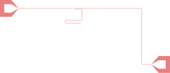

Tutorial: Schematic Basics
In Working with Paths, you built a resonator and feedline by manually positioning geometry. In this tutorial, you'll describe a similar device as a schematic — a graph of connected components — and let DeviceLayout handle placement.
What You'll Learn
- Using a chip anchor to position components
- Connecting components with
fuse!,attach!, androute! - Automatic placement with
plan - Rendering with
ProcessTechnologyandArtworkTarget
Prerequisites
- Completed Working with Paths tutorial
- Completed Building a Component tutorial
Setup
using DeviceLayout, DeviceLayout.PreferredUnits
using DeviceLayout.SchematicDrivenLayout
using FileIOStep 1: Create the path components
We'll build a resonator coupled to a feedline, with launchers at each end. Start by creating three paths, as you learned how to do in the Paths tutorial. We just need to create the paths without worrying about their relative positions. Paths are themselves Components, so they will work in a schematic like any other Component — they'll be positioned automatically based on schematic connections.
First, define a CPW style we'll use throughout:
cpw = Paths.CPW(10μm, 6μm)CPW with width 10 μm and gap 6 μmThe first component is a section of the measurement feedline, a straight CPW:
feedline = Path(; name="feedline", metadata=SemanticMeta(:metal_negative))
straight!(feedline, 4mm, cpw)Next, a resonator with a shorted start and open termination:
resonator = Path(; name="resonator", metadata=SemanticMeta(:metal_negative))
straight!(resonator, 200μm, cpw)
turn!(resonator, -90°, 50μm)
straight!(resonator, 300μm)
turn!(resonator, -90°, 50μm)
straight!(resonator, 500μm)
turn!(resonator, 180°, 50μm)
straight!(resonator, 500μm)
terminate!(resonator; initial=true, rounding=3μm, gap=0μm)
terminate!(resonator; rounding=5μm)2 segments styled as Open termination of CPW with width 10 μm, gap 6 μm, and rounding radius 5 μmFinally, a "launcher" (wirebonding pad that tapers to the CPW trace width), which we'll end up using twice:
launcher = Path(; name="launcher", metadata=SemanticMeta(:metal_negative))
launch!(launcher; trace1=cpw.trace, gap1=cpw.gap)CPW with width 10000.0 nm and gap 6000.0 nmStep 2: Create a chip anchor
In a schematic, plan positions components by traversing fuse! connections from a root node. Components connected only by route! must already be positioned — routes are resolved after placement.
This means we need an anchor to fix the positions of components that aren't directly chained together. A Spacer provides compass hooks at two points and has no geometry of its own:
chip = Spacer(6mm, -2mm; name="chip")
for (hname, h) in pairs(hooks(chip))
println("$hname: $(h.p), $(h.in_direction)")
endp0_east: (0.0 nm,0.0 nm), 0.0°
p0_northeast: (0.0 nm,0.0 nm), 45.0°
p0_north: (0.0 nm,0.0 nm), 90.0°
p0_northwest: (0.0 nm,0.0 nm), 135.0°
p0_west: (0.0 nm,0.0 nm), 180.0°
p0_southwest: (0.0 nm,0.0 nm), 225.0°
p0_south: (0.0 nm,0.0 nm), 270.0°
p0_southeast: (0.0 nm,0.0 nm), 315.0°
p1_east: (6.0e6 nm,-2.0e6 nm), 0.0°
p1_northeast: (6.0e6 nm,-2.0e6 nm), 45.0°
p1_north: (6.0e6 nm,-2.0e6 nm), 90.0°
p1_northwest: (6.0e6 nm,-2.0e6 nm), 135.0°
p1_west: (6.0e6 nm,-2.0e6 nm), 180.0°
p1_southwest: (6.0e6 nm,-2.0e6 nm), 225.0°
p1_south: (6.0e6 nm,-2.0e6 nm), 270.0°
p1_southeast: (6.0e6 nm,-2.0e6 nm), 315.0°The p0_* hooks are at the origin and the p1_* hooks are at (6mm, -2mm). We'll use them to position launchers at the chip edges.
Step 3: Build the schematic graph
Create the graph and add the chip as the root node. The first node stays at the origin:
g = SchematicGraph("resonator_feedline")
chip_node = add_node!(g, chip)ComponentNode("chip", Spacer{Unitful.Quantity{Float64, 𝐋, Unitful.ContextUnits{(nm,), 𝐋, Unitful.FreeUnits{(nm,), 𝐋, nothing}, nothing}}}("chip", (6.0e6 nm,-2.0e6 nm), CoordinateSystem "chip$2" with 0 els, 0 refs))Fuse launchers to the chip edges
We can use the same component in multiple nodes. Nodes always have unique IDs within the schematic graph; by default, these are generated based on the component name, but we can specify our own with base_id.
launcher_in_node = add_node!(g, launcher; base_id="launcher_in")
launcher_out_node = add_node!(g, launcher; base_id="launcher_out")ComponentNode("launcher_out", Path{Unitful.Quantity{Float64, 𝐋, Unitful.ContextUnits{(nm,), 𝐋, Unitful.FreeUnits{(nm,), 𝐋, nothing}, nothing}}}("launcher", (-150000.0 nm,0.0 nm), 0.0°, SemanticMeta(:metal_negative, 1, 1), DeviceLayout.Paths.Node{Unitful.Quantity{Float64, 𝐋, Unitful.ContextUnits{(nm,), 𝐋, Unitful.FreeUnits{(nm,), 𝐋, nothing}, nothing}}}[2 segments styled as Open termination of CPW with width 300000.0 nm, gap 150000.0 nm, and rounding radius 5000.0 nm, Straight by 245000.0 nm styled as CPW with width 300000.0 nm and gap 150000.0 nm, Straight by 250000.0 nm styled as Tapered CPW with initial width 300000.0 nm and initial gap 150000.0 nm tapers to a final width 10000.0 nm and final gap 6000.0 nm], CoordinateSystem "cs_launcher" with 0 els, 0 refs))Paths are components in the schematic system, so they have hooks for specifying conections. Every path has :p0 (start) and :p1 (end) hooks:
h = hooks(launcher)
println("p0: $(h.p0.p), $(h.p0.in_direction)")
println("p1: $(h.p1.p), $(h.p1.in_direction)")p0: (-150000.0 nm,0.0 nm), 0.0°
p1: (500000.0 nm,0.0 nm), 180.0°fuse! creates rigid connections: it specifies that the second node will be positioned so that the two hooks coincide with opposite directions.
fuse!(g, chip_node => :p0_west, launcher_in_node => :p0)
fuse!(g, chip_node => :p1_east, launcher_out_node => :p0)ComponentNode("launcher_out", Path{Unitful.Quantity{Float64, 𝐋, Unitful.ContextUnits{(nm,), 𝐋, Unitful.FreeUnits{(nm,), 𝐋, nothing}, nothing}}}("launcher", (-150000.0 nm,0.0 nm), 0.0°, SemanticMeta(:metal_negative, 1, 1), DeviceLayout.Paths.Node{Unitful.Quantity{Float64, 𝐋, Unitful.ContextUnits{(nm,), 𝐋, Unitful.FreeUnits{(nm,), 𝐋, nothing}, nothing}}}[2 segments styled as Open termination of CPW with width 300000.0 nm, gap 150000.0 nm, and rounding radius 5000.0 nm, Straight by 245000.0 nm styled as CPW with width 300000.0 nm and gap 150000.0 nm, Straight by 250000.0 nm styled as Tapered CPW with initial width 300000.0 nm and initial gap 150000.0 nm tapers to a final width 10000.0 nm and final gap 6000.0 nm], CoordinateSystem "cs_launcher" with 0 els, 0 refs))The input launcher's pad is at the left edge (origin) with the path extending east. The output launcher's pad is at the right edge (6mm) — fuse! rotates it so its hook direction opposes :p1_east, which makes the launcher extend west.
Chain the feedline from the input launcher
The feedline connects to the input launcher's narrow end:
feedline_node = fuse!(g, launcher_in_node => :p1, feedline => :p0)
# Equivalent to:
# feedline_node = add_node!(g, feedline)
# feedline_node = fuse!(g, launcher_in_node => :p1, feedline_node => :p0)ComponentNode("feedline", Path{Unitful.Quantity{Float64, 𝐋, Unitful.ContextUnits{(nm,), 𝐋, Unitful.FreeUnits{(nm,), 𝐋, nothing}, nothing}}}("feedline", (0.0 nm,0.0 nm), 0.0°, SemanticMeta(:metal_negative, 1, 1), DeviceLayout.Paths.Node{Unitful.Quantity{Float64, 𝐋, Unitful.ContextUnits{(nm,), 𝐋, Unitful.FreeUnits{(nm,), 𝐋, nothing}, nothing}}}[Straight by 4.0e6 nm styled as CPW with width 10 μm and gap 6 μm], CoordinateSystem "cs_feedline$2" with 0 els, 0 refs))Notice that we did not call add_node! for feedline first. When given a bare component (not yet in the graph), fuse! adds the node automatically and returns it.
Attach the resonator to the feedline
attach! connects a component to a specific point along a path, rather than to a named hook. This is a schematic-based analogue of how you used attach! in Working with Paths to place a reference to the resonator along the feedline.
Typically, you'd write something like attach!(g, feedline_node, resonator_node => :feedline, 2mm, location=1) to position a resonator's :feedline hook 2mm along and on the right side of the path. However, we made a choice to work with bare Paths as lightweight components, and the bare Path doesn't have such a hook at the necessary position and orientation.
Instead, place a resonator at a coupling position on the feedline using a Spacer:
resonator_node = add_node!(g, resonator)
# This won't attach with the desired spacing and orientation
# attach!(g, feedline_node, resonator_node => :p0, 2mm, location=1)
# So we'll attach another Spacer
coupling_gap = 5μm
spacing = coupling_gap + Paths.extent(cpw)
coupling_spacer_node = attach!(g, feedline_node, Spacer(0μm, -spacing) => :p0_south, 2mm; location=1)
fuse!(g, coupling_spacer_node => :p1_west, resonator_node => :p0)ComponentNode("resonator", Path{Unitful.Quantity{Float64, 𝐋, Unitful.ContextUnits{(nm,), 𝐋, Unitful.FreeUnits{(nm,), 𝐋, nothing}, nothing}}}("resonator", (0.0 nm,0.0 nm), 0.0°, SemanticMeta(:metal_negative, 1, 1), DeviceLayout.Paths.Node{Unitful.Quantity{Float64, 𝐋, Unitful.ContextUnits{(nm,), 𝐋, Unitful.FreeUnits{(nm,), 𝐋, nothing}, nothing}}}[2 segments styled as Shorted termination of CPW with width 10 μm, gap 6 μm, and rounding radius 3 μm, Straight by 197000.0 nm styled as CPW with width 10 μm and gap 6 μm, Turn by -90.0° with radius 50000.0 nm styled as CPW with width 10 μm and gap 6 μm, Straight by 300000.0 nm styled as CPW with width 10 μm and gap 6 μm, Turn by -90.0° with radius 50000.0 nm styled as CPW with width 10 μm and gap 6 μm, Straight by 500000.0 nm styled as CPW with width 10 μm and gap 6 μm, Turn by 180.0° with radius 50000.0 nm styled as CPW with width 10 μm and gap 6 μm, Straight by 495000.0 nm styled as CPW with width 10 μm and gap 6 μm, 2 segments styled as Open termination of CPW with width 10 μm, gap 6 μm, and rounding radius 5 μm], CoordinateSystem "cs_resonator" with 0 els, 0 refs))In practice, you'll usually avoid needing the Spacer by defining your own resonator component with the necessary hook. However, it may be a useful exercise to think through how this Spacer results in the desired resonator position.
The location=1 offsets the attachment to the right side of the feedline trace, as though with a feedline hook pointing back towards the trace ("north"). The :p0_south hook on the spacer points opposite that hook already, so attach! does not rotate it. The resonator then fuses to the :p1_west hook, by orienting its :p0 hook in the opposite direction ("east"). Since the :p0 hook points along a path's initial direction, the initial direction of the resonator path is "east".
Meanwhile, thanks to the Spacer, the path starts at a point spacing below the edge of the ground of the feedline CPW; since spacing = coupling_gap + Paths.extent(cpw), the width of the ground plane between the feedline and resonator is coupling_gap.
Route the feedline to the output launcher
The feedline end and the output launcher's narrow end are both positioned, but they don't coincide — there's a gap between them. route! creates a flexible path that will be computed after placement:
route_node = route!(g, Paths.StraightAnd90(50μm),
feedline_node => :p1, launcher_out_node => :p1,
cpw, SemanticMeta(:metal_negative))Paths.StraightAnd90 routes using straight segments and 90° bends with a minimum bend radius of 50μm.
Step 4: Plan and render
plan traverses the fuse! connections to position components, then resolves routes between the now-positioned endpoints:
sch = plan(g; log_dir=nothing)Schematic "resonator_feedline" with 0 els, 2 refsTo see that our components are now positioned, we can get geometric information based on the schematic and a node of our choice:
println("Resonator bounds: Rectangle($(bounds(sch, resonator_node).ll), $(bounds(sch, resonator_node).ur))")
println("Resonator center: $(center(sch, resonator_node))")
println("Resonator origin: $(origin(sch, resonator_node))")
println("Resonator global transformation: $(transformation(sch, resonator_node))")
println("Resonator p1 hook: $(hooks(sch, resonator_node).p1)")Resonator bounds: Rectangle((2.289000995114432e6 nm,-538000.0 nm), (2.911e6 nm,-16000.0 nm))
Resonator center: (2.6000004975572163e6 nm,-277000.0 nm)
Resonator origin: (2.65e6 nm,-27000.0 nm)
Resonator global transformation: Translation((2.65e6 nm,-27000.0 nm))
Resonator p1 hook: HandedPointHook{Unitful.Quantity{Float64, 𝐋, Unitful.ContextUnits{(nm,), 𝐋, Unitful.FreeUnits{(nm,), 𝐋, nothing}, nothing}}}(PointHook{Unitful.Quantity{Float64, 𝐋, Unitful.ContextUnits{(nm,), 𝐋, Unitful.FreeUnits{(nm,), 𝐋, nothing}, nothing}}}((2.856e6 nm,-527000.0 nm), 180.0°), true)Our route now has endpoints, and we can construct its path:
routed_path = SchematicDrivenLayout.path(component(route_node))
println("Route length: $(pathlength(routed_path))")Route length: 2.6570796326794894e6 nmcheck! validates design rules (component orientations, etc.) and must be called before rendering:
check!(sch) # No relevant design rules hereSchematic "resonator_feedline" with 0 els, 2 refsTo render the schematic to GDS, we need a target that maps semantic layer names to GDS layers. In the First Layout tutorial, you did this manually with a Dict. ArtworkTarget wraps a ProcessTechnology to handle it automatically:
tech = ProcessTechnology(
(; metal_negative=GDSMeta(0)),
(;)
)
target = ArtworkTarget(tech)DeviceLayout.SchematicDrivenLayout.LayoutTarget(ProcessTechnology((metal_negative = GDSMeta(0, 0),), NamedTuple()), (simulation = false, artwork = true), [1, 2], GDSMeta(300, 0), Symbol[], Dict{DeviceLayout.Meta, Union{Nothing, GDSMeta}}())The first argument to ProcessTechnology is a NamedTuple mapping semantic layer symbols to GDSMeta. The second is process parameters (empty here).
Render and save:
cell = Cell("resonator_feedline", nm)
render!(cell, sch, target)
save("resonator_feedline.gds", cell)
save("resonator_feedline.svg", cell);
Summary
In this tutorial, you learned:
Spacer: An anchor component with compass hooks for positioning other components at fixed locationsfuse!: Rigid connections that position components during planning — hooks coincide with opposite directionsattach!: Connects a component to a specific point along a pathroute!: Flexible connections resolved after placement — endpoints must already be positioned byfuse!plan: Traversesfuse!edges to compute positions, then resolves routescheck!: Validates design rules (required before rendering)ProcessTechnologyandArtworkTarget: Structured mapping from semantic layers to GDS layers
Next Steps
Continue to Creating a PDK to learn how to package components, technologies, and targets for team use.
See Also
- Concepts: Schematic-Driven Design for how planning and hook fusion work
- QPU17 Example for a full-scale schematic design